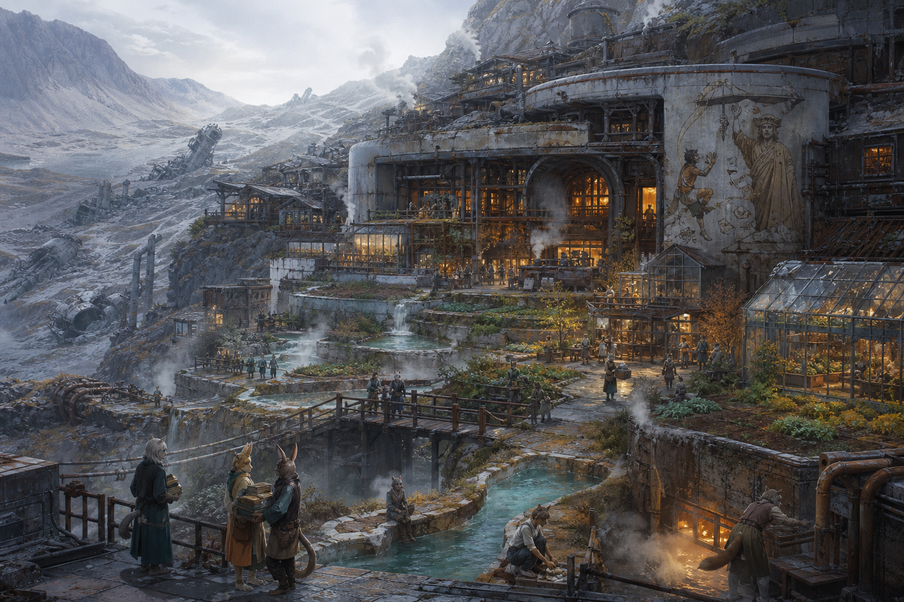
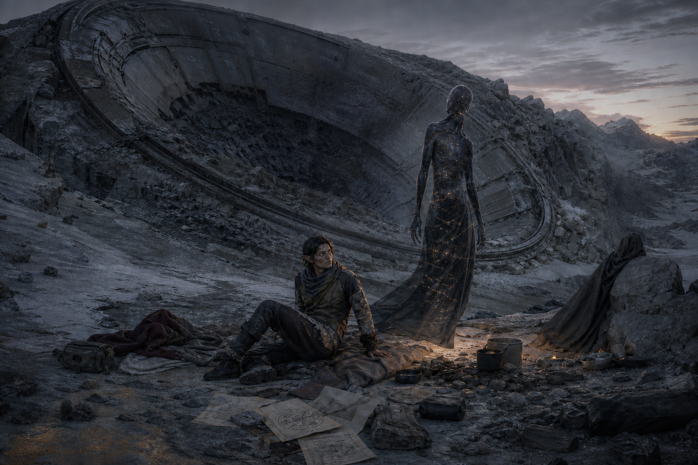

Aventura para 2-3 sesiones en Mundo Chatarra (El Vertedero) — ver
el DLC Mundo Chatarra para el resto del mundo (geografía,
supervivencia, Colosos, facciones, bestiario y las Bestias del Norte
como raza jugable).

Segunda edición completa. Reconstrucción íntegra sobre la historia original —conservada como autoridad narrativa—, desarrollada al nivel operativo de los módulos recientes del proyecto y con sus mecánicas alineadas al canon vigente. Pendiente de playtest.
Duración: 2-3 sesiones, ampliable | Nivel: Inicial/Medio | Tono: Misterio filosófico con acción
Esto no es una campaña ni una revelación sobre los Precursores: es la historia de un joven monje que interpretó una promesa más grande de la que le hicieron, y del grupo que lo encuentra a tiempo de que la elección todavía sea suya. La Espada del Cielo Abierto no aparece. Hana no tiene asesino que desenmascarar — murió eligiendo salvar a Ren, y esa elección es precisamente lo que él no ha aceptado. Axarón no es un demonio malvado disfrazado de amigo ni una víctima inocente: dijo una verdad literal y dejó que Ren la oyera como una promesa mayor.
La aventura no dicta una respuesta moral. Puede terminar con Ren de vuelta en el Monasterio, con Ren y Axarón partiendo juntos hacia el norte, con el pacto roto, con el pacto vigilado, o con algo que ni este documento ni los PJ vieron venir.
El Hermano Kaito busca Iniciados capaces de Invocación o Camino de los Portales —disciplinas que los monjes del Monasterio de los Libros no dominan— para encontrar a Ren, un joven monje desaparecido hace 23 días. No es una misión de captura: el Voto del Equilibrio impide al Monasterio declarar enemigo a Ren mientras no exista prueba de que daña a otros. El encargo real es localizarlo, comprobar si actúa libremente, y ofrecerle volver.
Ren fue a buscar una huella de la Espada del Cielo Abierto para dar sentido a la muerte de su hermana Hana. En el Ojo del Coloso —una zona dañada que emite Distorsión, no un portal— algo respondió a su intento improvisado de invocación: Axarón, un demonio menor que lleva Ciclos buscando algo que ya no existe. Axarón dijo una verdad literal —«puedo conducirte hasta aquello que buscas»— y dejó que Ren la entendiera como una promesa de recuperar la espada, resucitar a Hana o reparar el pasado. Ninguna de las tres cosas está prometida ni es posible.
Hana, hermana mayor de Ren, murió en el Páramo de la Desesperación durante un accidente real: empujó a Ren fuera de una grieta que se derrumbaba y no logró salir ella misma. No hubo criatura, emboscada ni culpable — eligió salvarlo, y esa elección es el hecho que Ren no ha logrado aceptar. Convertir la pérdida en una búsqueda le resulta más soportable que aceptar que Hana decidió morir por él.
Ren dejó el Monasterio hace 23 días buscando una huella de la Espada del Cielo Abierto, una espada única capaz de cortar barreras, vínculos y caminos imposibles —nunca de resucitar a nadie ni de alterar el pasado. Llegó al Ojo del Coloso e intentó, sin formación real de Invocador, un ritual improvisado: usó su Tatuaje Rúnico y una inscripción copiada de un canal de portal antiguo —gastando un Punto Épico para lograr la copia, no inventándola— como sustituto de un Camino de los Portales que nunca llegó a entrenar. El ritual no invocó nada formalmente. Algo respondió de todos modos.
Axarón es «el que busca sin encontrar»: un demonio menor que fue, según su propio origen registrado, Maestro de Portales de nivel 7 hasta que un canal que abrió hacia una tesela colapsada no volvió a cerrarse. Lleva Ciclos siguiendo rastros, objetos y ausencias sin culminar nunca una búsqueda verdadera. A Ren le dijo una verdad literal: «Puedo conducirte hasta aquello que buscas». Eso no prometía conocer la ubicación exacta de la espada, recuperarla, resucitar a Hana ni reparar el pasado — pero Ren escuchó una promesa mayor de la que Axarón pronunció, y Axarón, que sabía que Ren esperaba más, no lo corrigió porque necesitaba el vínculo para seguir buscando. No es inocente. Tampoco es cruel: puede sentir afecto, orgullo, miedo y curiosidad genuinos por Ren.
Para sostener su presencia física fuera de la Distorsión, Ren vinculó 1 Punto de Alma. Ese punto sigue dentro de su Alma total, pero queda inaccesible mientras el vínculo se mantenga — no perdido, bloqueado, exactamente como cualquier Alma vinculada según las reglas vigentes. Si el pacto se deshace correctamente, el punto vuelve a quedar disponible. Si Axarón lo consume o el vínculo se rompe de forma traumática, el Alma total de Ren baja en 1: sus PA máximos pasan de 8 a 7, y si su Humanidad actual supera 7×10=70, desciende hasta 70 — no puede recuperarse por encima de ese techo mientras ese punto separado siga sin recuperarse. Es el mismo procedimiento ya fijado para el drenaje de Alma en otras fuentes del canon; aquí se aplica igual, sin inventar una regla nueva.
Ren permanece en el Ojo del Coloso porque Axarón ha detectado allí una huella de la espada y puede manifestarse con menor gasto que en cualquier otro punto — no porque el lugar sea un portal que deba cerrarse. Su Deriva subió a 23 durante el intento: cruzó el umbral 10 —primer cambio físico menor, una extrañeza pasajera al volver a un lugar conocido— y después el umbral 20, que le dio El Ojo que No Cierra —un tercer ojo cerrado en la frente, rasgo de Deriva ligado a herencia Precursora, no un rasgo racial de las Bestias—: no ve el espectro visible, ve Distorsión, intenciones y mentiras; se abre solo cuando Ren decide, y cuando está abierto todos lo ven.
| Momento | Suceso |
|---|---|
| Hace 23 días | Ren abandona el Monasterio. |
| Hace 18 días | Alcanza el Ojo del Coloso y establece el vínculo. |
| Hace 13 días | Axarón detecta la primera huella. |
| Día 0 | Kaito contrata a los PJ. |
| Día 12 | Comienzan emanaciones más intensas alrededor del Ojo. |
| Día 15 | Ren está exhausto y el vínculo se vuelve inestable. |
| Día 17 | Axarón identifica una dirección nueva. |
| Día 18 | Ren y Axarón parten hacia el norte. |
| Día 20 | Su rastro se vuelve extremadamente difícil de seguir. |
El viaje normal hasta el Ojo del Coloso ronda los catorce días — existen atajos, transporte y ayuda que el grupo puede ganarse en la propia partida, sin que la geografía canónica obligue a otra cifra. Estos hitos ocurren con independencia de que los PJ intervengan; sirven para que el Narrador sepa dónde está el mundo en cada momento, no como cuenta atrás de asalto.
El Voto del Equilibrio no es neutralidad ni pasividad. Descansa en tres principios:
El voto concreto que un Bestia hace al abandonar el Norte —no acumular riqueza, no buscar venganza, proteger a los débiles; +5 a Salud Mental mientras se cumple, −10 si se rompe— es la forma práctica de esos tres principios, no una regla distinta. Ren ha quebrado el tercero: está dispuesto a pagar personalmente por su búsqueda, pero también espera que Axarón, la espada o el mundo conviertan la elección de Hana en otra cosa — un sacrificio que le exige al pasado sin haber preguntado si el pasado estaba dispuesto a darlo.
La aventura no dicta una respuesta moral única. Los PJ pueden ayudar a Ren a aceptar la pérdida, a continuar la búsqueda con prudencia, a mantener el pacto conscientemente, a separarlo del vínculo, o a aceptar un sacrificio definitivo.
Una localización viva, no una sala donde se recoge la misión. Se integra en terrazas geotérmicas habitadas por comunidades Bestia: piedra, madera cultivada y metal recuperado; invernaderos calentados por vapor; bibliotecas excavadas en antiguos depósitos industriales, con libros impresos, placas de memoria, relatos orales y máquinas lectoras reparadas; canales calientes, pasarelas, pequeños talleres y huertos. No todos son monjes — hay familias, copistas, agricultores, reparadores, peregrinos, niños y comerciantes. El Voto es su tradición principal, no una religión obligatoria.
En una pared, una figura burlona roba páginas a una estatua solemne que sostiene el techo que protege a ambas — la expresión local de las Dos Voces. Ninguna de las dos tiene razón fijada.
El Monasterio sí ha buscado a Ren. Dos rastreadores siguieron su ruta y regresaron heridos por las primeras emanaciones del Ojo. Kaito investigó y reunió información. El Voto impide declarar enemigo a Ren o arrastrarlo por la fuerza mientras no exista prueba de que daña a otros — por eso el Monasterio busca a alguien de fuera: los PJ aportan independencia, habilidades distintas, y la posibilidad de hablar con Ren sin representar directamente la autoridad que él dejó atrás. Localizarlo, comprobar si actúa libremente y ofrecerle volver es el encargo inicial. Capturarlo no lo es.
Sobrio, paciente, humor seco; ordena objetos cuando está nervioso. Quiere encontrar a Ren vivo y evitar un juicio simplista. Le enseñó a copiar y estudiar inscripciones, no a invocar demonios. Teme que el Monasterio deje de tratar a Ren como persona. Respeta la precisión, la prudencia y admitir ignorancia. Puede acompañar como apoyo o quedarse y entregar una carta — nunca resuelve las escenas por los PJ.
Agotado, pero lúcido y responsable de sus decisiones. Quiere que la muerte de Hana conduzca a algo valioso. Sospecha que interpretó mal la promesa de Axarón, pero admitirlo lo obligaría a aceptar el duelo. Respeta a quien reconoce el precio de sus propias decisiones. Rechaza la compasión condescendiente y que llamen insensata a Hana. Si lo engañan puede fingir cooperación y escapar; si lo escuchan de verdad, admite dudas; si lo atacan, pide ayuda a Axarón procurando evitar muertes.
Delgado; bajo su piel parecen moverse caminos y horizontes. Quiere completar, por primera vez, una búsqueda verdadera. Respeta promesas literales y preguntas precisas. Detesta que se cambie después el significado de las palabras. Puede negociar una nueva formulación de su promesa, mientras siga siendo posible cumplirla. No busca matar a Ren ni devorar su Alma por defecto, pero defenderá su propia existencia — y el Punto de Alma vinculado puede destruirse o consumirse si el vínculo se rompe de forma traumática. Si lo liberan, puede reaparecer en futuras aventuras.
No aparece como fantasma ni ofrece instrucciones desde el más allá — no tiene ficha ni escena propia. Existe solo mediante recuerdos, testimonios, registros y emanaciones de Distorsión: Kaito recuerda su paciencia; Ren, su muerte; una viajera de las terrazas, su humor y su imprudencia ocasional; el registro del Monasterio, su competencia y una desobediencia consciente. Capaz, divertida, imprudente a veces, responsable de su propia decisión — nunca una mártir perfecta.
Ninguno debe quedar reducido a «sensato», «víctima» o «monstruo».
Ninguna conclusión importante depende de una sola tirada — cada dato tiene al menos dos accesos.
| Pista | Qué demuestra | Acceso principal | Alternativa |
|---|---|---|---|
| Muerte de Hana | Eligió salvar a Ren; no hubo asesino | Kaito y el registro del Monasterio | Superviviente en las terrazas |
| Página arrancada | Ren investigaba la espada | Celda de Ren | Copia de una copista |
| Límites de la espada | Corta barreras y vínculos; no resucita | Catálogo del Monasterio | Relato oral |
| Runas copiadas | Reprodujo una inscripción existente mediante un Punto Épico | Herramientas de Ren | Confesión previa a Kaito |
| Naturaleza de Axarón | Sigue rastros y ausencias, nunca culmina una búsqueda | Bestiario incompleto del Monasterio | Señales del viaje |
| Precio del vínculo | 1 PA permanece vinculado, no perdido | Notas de Ren | Examen espiritual o conversación directa |
| Huella antigua | Existía antes de que Ren llegara | Marcas del Ojo del Coloso | Comparación documental |
| Ruptura del pacto | Puede ser voluntaria, agotarse o ser violenta | Tratado prohibido de la biblioteca | Preguntar a Axarón con precisión |
| Riesgo verdadero | La ruptura violenta puede consumir el PA | Advertencia directa de Ren | Emanación compartida en el viaje |
| Intención de Ren | Quiere continuar, pero duda | Carta sin enviar | Conversación directa |
Tres o cuatro pistas bastan para encontrar a Ren; seis permiten comprender el pacto; ocho o más ofrecen casi toda la información — nunca la ubicación de la espada, que este módulo no revela.
Situación y propósito. Kaito localiza a los PJ en cualquier mundo donde estén y les ofrece el encargo.
Lugar. Cualquier lugar de calma razonable — una posada, un mercado, un momento sin urgencia previa.
PNJ presentes. Kaito.
Cómo se acerca. Si los PJ vigilan activamente la zona, resuélvelo con una tirada enfrentada normal (Alerta de los PJ contra Sigilo de Kaito, con el +10 que le dan su TARA y sus tatuajes) — no un umbral automático. Si nadie vigila, aparece con calma en un momento tranquilo.
Un viajero os observa desde el otro extremo del camino. Lleva varias capas de ropa remendada, una mochila demasiado llena y tres libros sujetos al pecho mediante correas. Cuando advierte que lo habéis visto, levanta una mano y se acerca sin prisa.
Tiene rasgos bestiales, caninos cortos y el pelo gris recogido detrás de la cabeza. Antes de hablar comprueba el cierre de su mochila. Después vuelve a comprobarlo.
—Busco a personas capaces de encontrar a alguien sin decidir de antemano qué hacer con él.
Qué quiere. Que alguien ajeno al Monasterio localice a Ren, compruebe si actúa libremente, y le ofrezca volver — sin representar la autoridad de la que Ren huyó.
Oferta. 4.000 PC de adelanto, 8.000 PC al completar (12.000 PC totales, calibrados contra la economía vigente para una misión de 2-3 sesiones con viaje y riesgo real). Acceso a la Nave de los Libros. Posibilidad de contacto con un Tatuador Rúnico del Monasterio, sin especialización garantizada.
Información que ofrece Kaito. Ren desapareció hace 23 días hacia el norte, hacia el Ojo del Coloso. Intentó algo que ningún monje domina. Mencionó un nombre — Axarón — que podía «conducirlo hasta lo que buscaba».
Si los PJ no intervienen. Kaito sigue buscando ayuda por otras vías; el Monasterio no manda una expedición armada — el Voto se lo impide sin pruebas de daño.
Cuándo tirar. Solo si los PJ activamente vigilan o interrogan a Kaito con desconfianza; la conversación en sí no exige tiradas.
Situación y propósito. Los PJ llegan al Monasterio, investigan la celda de Ren y conocen su gente antes de partir. Da tiempo y textura al mundo antes del viaje.
Lugar. El Monasterio de los Libros, con su gramática solarpunk geotérmica: terrazas, invernaderos de vapor, bibliotecas de piedra y metal recuperado.
El Monasterio no se alza sobre la montaña: forma parte de ella. Las terrazas descienden entre canales de agua caliente, huertos cubiertos y edificios construidos con piedra, madera oscura y placas metálicas de media docena de procedencias.
El vapor cruza las pasarelas y deja gotas sobre cables, campanas y tejados. Hay niños transportando páginas entre talleres, agricultores discutiendo con una máquina de riego y una anciana recitando un libro mientras otra persona recompone su encuadernación.
En una pared, una figura burlona roba páginas a una estatua gigantesca. La estatua sostiene el techo que protege a ambas.
PNJ presentes. Kaito, y al menos dos PNJ menores de la vida cotidiana (ancianos, copistas, agricultores) según qué escenas elijas.
Investigación en la celda de Ren. Mapa marcando el Ojo del Coloso; notas sobre «Axarón — el que busca sin encontrar»; un tatuaje rúnico incompleto (Alerta N1); una página con el nombre «La Forja del Cielo Abierto» — accesos directos a varias pistas de la matriz (Punto 8).
Al menos dos escenas cotidianas, elegibles sin agotarlas todas:
Qué sucede si los PJ no intervienen. El Monasterio sigue funcionando exactamente igual; estas escenas son textura y conocimiento, no obstáculos a superar.
Formas de participar. Preguntar, ayudar, observar, o simplemente escuchar — cualquiera de las escenas anteriores basta para dar contexto sin forzar una tirada.
Cuándo tirar. Solo si buscan algo oculto en la celda de Ren (Investigar o Alerta, dificultad Normal) — la vida cotidiana no necesita tiradas.
Tres tramos concretos, no una tabla de encuentros al azar que sustituya al viaje.
Sobre las emanaciones. Los episodios de Distorsión que aparecen en este acto —el recuerdo de Hana, la sombra que no acompaña— son texturas narrativas: aparecen y desaparecen sin subir la Deriva de nadie. Solo una exposición peligrosa expresamente indicada por una regla —permanecer deliberadamente en contacto con el origen de una emanación, o algo igual de concreto que decidas en mesa— puede producir +1 Deriva. Presenciarlas u observarlas no cuenta.
Situación. Una emanación de Distorsión reproduce un recuerdo de Hana en los canales geotérmicos de una comunidad del Norte.
El agua de los canales deja de correr.
Durante unos segundos no estáis en la terraza. Estáis en una pendiente cubierta de polvo, bajo un cielo blanco. Una mujer empuja a alguien fuera de una grieta. No podéis verle el rostro, pero sentís el peso de su decisión como si el recuerdo fuese vuestro.
Entonces regresa el sonido del agua. Una niña señala el extremo vacío del canal.
—Esa mujer me ha dicho que no fue culpa suya elegir volver.
Qué ocurre. El agua deja de correr un instante; una mujer empuja a alguien fuera de una grieta, con el peso de la decisión sentido como propio. Una niña oye después: «No fue culpa suya elegir volver».
Qué sucede si los PJ no ayudan. Los propios habitantes controlan la avería sin ellos — cambia el rumor sobre los PJ y su relación con la comunidad, no la avería en sí.
Pistas disponibles. Confirma la muerte de Hana como elección, no como asesinato (matriz, Punto 8).
Situación. Un refugio térmico ocupado por una caravana de viajeros. El intercambiador solo puede calentar a parte del grupo.
El refugio es una caja de metal clavada entre dos paredes de roca. Dentro huele a ropa húmeda, aceite y sopa demasiado aguada.
Ocho viajeros se agrupan alrededor de un intercambiador abierto. Una reparadora sostiene una pieza partida mientras su compañero intenta convencerla de que insultarla no mejorará su funcionamiento.
—Producirá calor para cuatro —dice ella—. Somos doce si contamos a los recién llegados.
Qué quiere cada parte. Los viajeros quieren sobrevivir la noche sin que nadie quede fuera; nadie propone abandonar a otro automáticamente.
Formas de participar, sin agotarlas. Reparar el intercambiador, compartir recursos, buscar otra protección, negociar turnos, o marcharse a otro refugio.
PNJ presente. Una anciana que conoció a Hana — otra vía hacia la misma pista de la muerte de Hana y hacia el humor e imprudencia que la definían.
Situación. Una criatura local no puede separarse de una sombra que ha quedado atrás — efecto de una emanación de Distorsión, no una amenaza por defecto.
La criatura permanece inmóvil en mitad del camino. Tiene seis patas, piel gruesa y el tamaño aproximado de un perro grande. Cuando avanza, su sombra no la acompaña.
El animal da tres pasos, mira atrás y descubre su silueta todavía pegada a la piedra. Lanza un gemido, retrocede y vuelve a encajar sobre ella.
Durante un instante, también vuestras sombras tardan demasiado en imitaros.
Qué sucede. No es un combate obligatorio: enseña que una emanación puede separar temporalmente propiedades vinculadas (paralelo directo del vínculo de Ren y Axarón) y ofrece una pista sobre su naturaleza.
Una noche tranquila. En algún punto de este acto, una noche sin ataque ni revelación: Kaito cocina mal, alguien cuenta una historia absurda, y los PJ pueden hablar de pérdidas propias o asuntos personales. No es opcional — el módulo la exige explícitamente para que el viaje no sea solo tensión.
Cuándo tirar. Supervivencia para seguir el rastro de Ren cuando haga falta reencontrar el camino; el resto de cada tramo se resuelve por descripción y decisión, no por tirada automática.
Lugar. Una depresión circular abierta en el costado de una estructura enterrada — pudo ser una antena, una puerta o parte de una máquina imposible de imaginar completa. No es un portal permanente que cerrar: es una zona dañada que emite Distorsión, con episodios de recuerdos compartidos, sombras desacopladas y geometrías dobles mientras se permanece cerca. La Deriva real solo sube si una exposición o efecto expreso de las reglas lo indica, no por estar simplemente presente.

El Ojo del Coloso no es un ojo. Es una depresión circular abierta en el costado de una estructura enterrada. Podría haber sido una antena, una puerta o parte de una máquina demasiado grande para imaginarla completa.
En su interior, el aire forma capas. Las piedras parecen ocupar dos lugares a la vez y las huellas de Ren continúan en direcciones incompatibles.
Ren está sentado frente a la depresión. La criatura que permanece a su lado es alta y delgada. Bajo su piel se mueven caminos, tejados y horizontes vistos desde una altura imposible.
—Habéis tardado —dice Ren.
La criatura inclina la cabeza.
—No. Han llegado exactamente cuando podían llegar.
PNJ presentes. Ren y Axarón.
Antes de cualquier combate, debe existir oportunidad real de comprender: qué pidió Ren; qué prometió Axarón en realidad; qué sostiene el vínculo; qué ocurrirá si parten hacia el norte; qué riesgos supone romperlo allí mismo. Axarón responde con precisión literal a preguntas precisas — y detesta que se cambie después el significado de lo que dijo.
Qué quiere cada parte. Ren quiere que su búsqueda haya servido de algo. Axarón quiere completar, por primera vez, una búsqueda verdadera. Ninguno de los dos quiere hacer daño a los PJ por defecto.
Marcos preparados, sin cerrar la creatividad:
Si hay combate, usa las reglas vigentes de combate y máquinas normales, sin sistema alternativo de enjambres — Axarón no es un enjambre. No exijas que exista una brecha o portal que cerrar, y no trates Camino de los Portales como si fuera la habilidad de Invocación: la tirada correcta, si alguien intenta redefinir o forzar el vínculo formalmente, es Invocación de Demonios (media entre Camino de los Portales y la Marca Arcana más alta del personaje).
Las campanas no anuncian vuestra llegada. Lo hacen los niños, que os descubren desde las terrazas y comienzan a gritar nombres antes de estar seguros de quién regresa.
Kaito espera junto al primer canal. No pregunta por la espada. Cuenta a quienes llegan, observa sus heridas y mira durante unos segundos el lugar que ocupa —o debería ocupar— Ren.
Después asiente.
—Entrad. Las explicaciones importantes siempre resultan peores cuando uno tiene frío.
Resuelve cada hilo por separado — no todos tienen que cerrarse en la misma dirección.
La misión puede considerarse cumplida aunque Ren no regrese, si los PJ descubrieron la verdad y evitaron una catástrofe mayor.
Hermano Kaito (Monje Bestia, Felino, TARA «Más Humano») — Mensajero del Monasterio. Casi indetectable como no humano.
F35/A40/P50/V60 | PV 18/18/18 | Blindaje 1
Detección de Distorsión 65% | Camino de los Portales 30% | Persuasión 55% | Supervivencia 40%
Tatuajes rúnicos N1 (Alerta: +10 a Alerta y Vigilar/Rastrear · Paso Ligero: +10 a Movimiento evasivo) — una activación preparada por marca, sin cargas múltiples; coste de activación en PV según la habilidad del Tatuador que las inscribió; recarga en 24 horas tras activarse. No ataca primero. Se defiende y huye si la situación es desesperada.
Ren (Monje Bestia, Felino, TARA «Más Bestia») — Joven monje que intentó un ritual de invocación improvisado. Deriva 23. Tercer ojo cerrado en la frente (El Ojo que No Cierra).
F30/A45/P40/V55 | PV 16/16/16 | Blindaje 1
Detección de Distorsión 45% | Camino de los Portales 10% (fragmentos autodidactas, nunca entrenado formalmente)
Humanidad 80 (base Bestia no Iniciado) | Alma total 8, 1 PA vinculado a Axarón mientras dure el pacto
El Ojo que No Cierra: no ve el espectro visible; ve Distorsión, intenciones y mentiras; +20 a detectar engaños y Distorsión cuando está abierto; −15% a Sociales con quien lo ve abierto por primera vez. Se abre solo cuando Ren decide. Habla en lengua Precursora sin saberlo bajo estrés.
Axarón — el que busca sin encontrar. Demonio menor del Grimorio, antiguo Maestro de Portales de nivel 7 que no logró cerrar un canal hacia una tesela colapsada.
F45/A45/P50 | PV 22 | Blindaje 4 | Ataque 55% (Pen 2) | Daño 8
Especial: +20 a localizar objetos o personas perdidas; puede rastrear a través de la urdimbre. Precio en Almas: 1 punto para establecer el vínculo inicial que sostiene su presencia física.
Hana no tiene ficha — no aparece físicamente en ningún punto del módulo.
PNJ menores del Monasterio (ancianos, copistas, agricultores, la anciana del refugio): trátalos como PNJ funcionales de una o dos profesiones, sin ficha completa, según la escala vigente de profesiones de PNJ.
Pago: 4.000 PC de adelanto, 8.000 PC al completar — 12.000 PC totales para el grupo, calibrados contra la economía vigente de una misión de 2-3 sesiones con viaje y riesgo real.
Recompensas no monetarias:
Consecuencias sociales se expresan mediante Reconocimiento/Reputación y, si algún PNJ concreto queda en deuda, mediante el lenguaje ya establecido de favores («alguien te debe un favor menor/serio») — nunca como una cifra suelta de «+10 reputación».
Objeto único. No se encuentra ni se entrega en este módulo — la aventura solo descubre una huella relacionada con ella: puede proceder de un antiguo portador, una copia incompleta de sus runas, una herida espacial, o un objeto que estuvo en contacto con ella. Esta redacción no cierra cuál es la respuesta correcta.
La espada corta barreras, vínculos o caminos imposibles. Nada en este módulo afirma que resucita muertos o altera el pasado — es exactamente el tipo de objeto que convierte una pérdida personal en la promesa de una solución imposible, y por eso Ren la buscaba.
La inscripción que Ren llevaba copiada en su tatuaje incompleto no es una runa que él inventara: reprodujo, mediante un Punto Épico, una inscripción ya existente que encontró documentada. Ren no es el creador de esas runas — solo quien encontró la manera de copiarlas.
Se empuña mediante katas — formas marciales que el portador ejecuta antes de liberar su poder. Cada kata consume una acción completa; mientras la ejecuta, el portador puede esquivar o bloquear con normalidad, pero si recibe daño durante la secuencia debe superar una tirada de Resistir o pierde de golpe todas las katas acumuladas hasta ese momento.
El poder se acumula hasta un máximo de 5 katas. Cuanto más se acumula, más certero y devastador es el golpe final, pero también más difícil de controlar: la habilidad de ataque cae según sube el daño.
La Espada del Cielo Abierto — acumulación de katas
| Kata | Habilidad | Daño | Penetración |
|---|---|---|---|
| 1 | +20 | +2 | +2 |
| 2 | +10 | +4 | +4 |
| 3 | 0 | +6 | +6 |
| 4 | −10 | +8 | +8 |
| 5 | −20 | +10 | +10 |
El ataque se libera en línea recta: 2 metros de base más 2 metros por cada kata acumulada (máximo 12 metros con 5 katas), y afecta a todo lo que se cruce en su camino.
Efecto visual: la primera kata abre un claro entre las nubes sobre la espada; de la segunda a la cuarta, el filo traza en el cielo un kanji de rayo cada vez más nítido; con la quinta, el rayo cae y el cielo se despeja por completo.
Estas semillas no son promesas editoriales — quedan abiertas para quien decida desarrollarlas.
"El equilibrio no es quietud. Es saber cuándo ceder y cuándo resistir."
— Hermano Kaito, Monasterio de los Libros